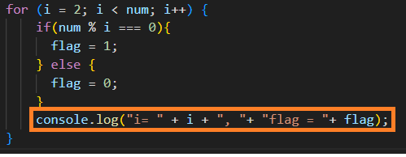
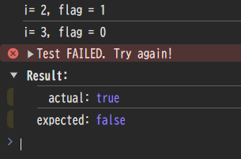
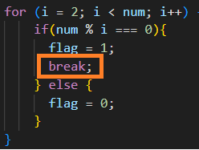

※コンソールBoxを開いて、天の声を聞いてください
方針:計算は機械が実施するので、3に決定!!
| やりたい事 | 使う機能 |
|---|---|
| 割れるかの判断 | % |
| N-1まで繰り返す | for loop |
| 割れたかどうかの情報 | そのための変数の準備 |
| 1はループから除外したい | if |
※1回目のテスト実行に向けてのやりたい事になります
/**
* @param {number} num - 確認したい数字
* @returns {boolean} 与えられた数字が素数かどうか
*/
function isPrime(num) {
let flag=0; // 0:素数 1:素数ではない
let i =0;
if(num === 1) {
flag = 1;
} else if (num >=2) {
for (i = 2; i < num; i++) {
if(num % i === 0){
flag = 1;
} else {
flag = 0;
}
}
}
if (flag === 0) {
return true;
} else if (flag === 1) {
return false;
}
}
test( isPrime(4), false);
※テスト関数の記載はWeb上では省略しています
コンソールBoxを開いて、以下の実行ボタンをクリック
怪しいと思う変数をconsole.logでひたすら確認する → 今回はflagに注目
今回はfor loopの中にconsole.logを入れてみた所・・・
i=2で素数ではないと判断したのに、i=3の結果でflagが上書きされている
flagを上書きしないようにするのが次の目標
別の変数を準備して、if文を使ってflag=1の時は上書きされないようにしてもいいけど・・・
コンソールBoxを開いて、以下のピコーン!ボタンをクリック
ネットで「Javascript」、「ループ抜ける」で検索すると、
breakを発見なのでbreakを使ってソースコードを修正
コンソールBoxを開いて、以下の実行ボタンをクリックすると
11/1の発表練習で作るか判断(たぶん4分以内に収まらないので削除)